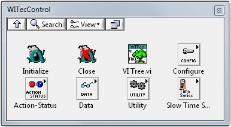
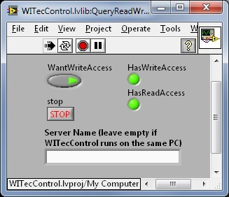

|
LabVIEW 驱动
|
LabVIEW 中的功能块称为虚拟仪器（VI），WITec Control 提供的大多数控制功能都已实现相应的 VI。
本文描述与 WITec 产品相关的 LabVIEW 软件组件的安装，以及验证安装成功。还包括对接口附带的示例的简要说明。这些内容在单独文档中有更详细的描述。
对于常见问题和故障排除，请参阅同时包含的常见问题文档。
编写 LabVIEW 代码的协助可从 National Instruments 获得并购买培训。
前提条件
在安装 WITec Control LabVIEW 驱动之前，必须安装 LabVIEW：
安装
安装后，WITec Control LabVIEW 驱动在 LabVIEW 中位于"Instrument IO/Instrument Drivers"文件夹，如图 1 所示。

图 1：WITec Control LabVIEW 驱动。
示例
WITec Control LabVIEW 驱动项目包含一些附加示例，以帮助理解此接口。这些示例及其相应的详细说明位于 LabVIEW 驱动目录及其子目录"Examples"中。第一个示例（慢速时间序列）以最详细的方式记录，包括框图，以便用户理解。
建议用户在开始自己的项目之前熟悉这些示例。
测试连接
运行 WITec LabVIEW 驱动中包含的示例 LabVIEW VI "QueryReadWrite"。
（如果您远程访问显微镜 PC，在相应字段中输入其网络名称作为服务器名称，如图 2 所示。）
启动 VI 后，"HasReadAccess"指示灯应为绿色。按下"WantWriteAccess"后，"HasWriteAccess"指示灯也应变为绿色，如图 2 所示（如果 WITec Control 中已授予写访问）。

图 2：测试 LabVIEW 对 WITec Control 的读写权限。